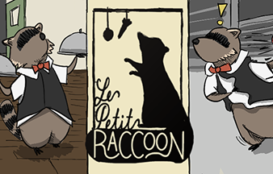
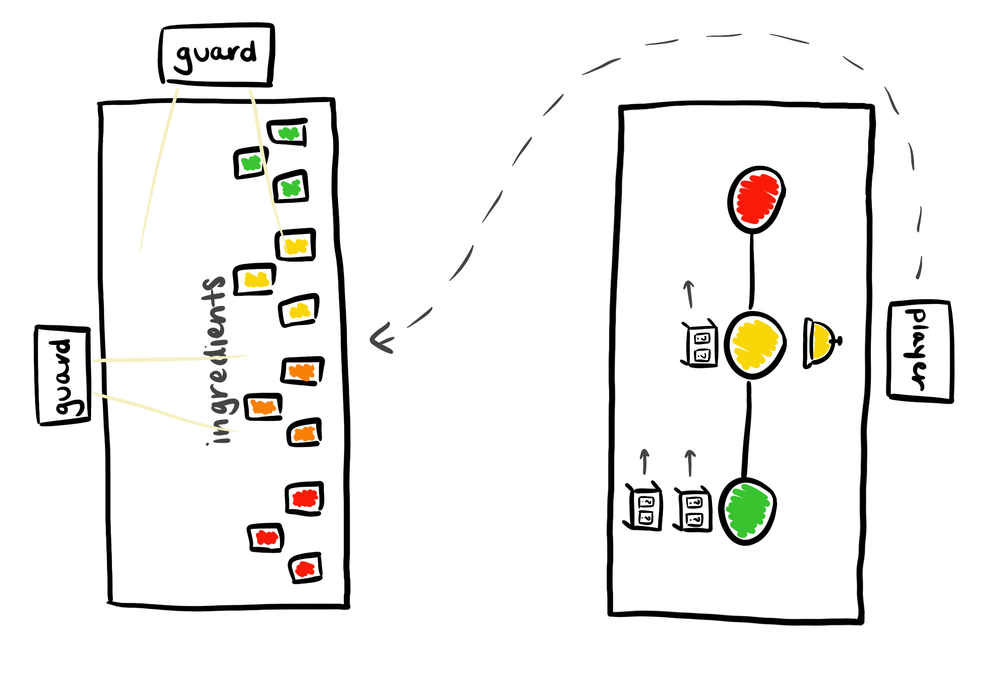
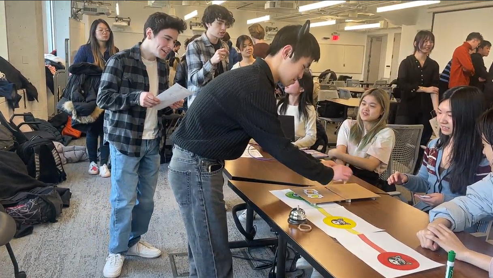
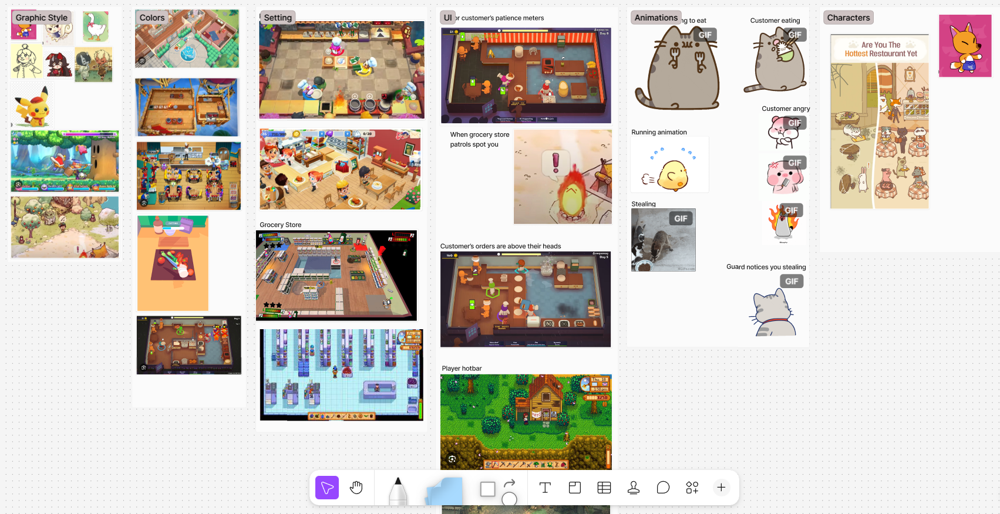
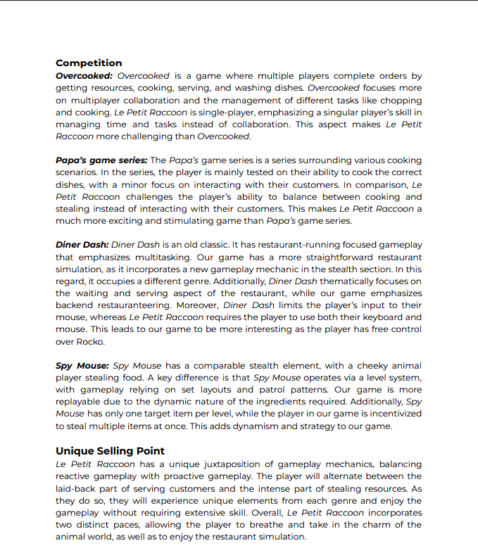

UI/UX Designer
January 2024 - May 2024
FigJam/Figma
Le Petit Raccoon is a computer game that blends together cooking, memory, and stealth. I worked on this game alongside nine other designers and programmers as part of a course at Cornell University, Introduction to Computer Game Design. As the UI/UX designer, I storyboarded and designed the game's UI and conducted playtesting sessions to collect feedback. At GDIAC Showcase 2024, we won an award for Most Innovative! We've since launched our game on Steam and became a finalist for BostonFIG 2025.
Before coding up the game, we needed an early prototype to gauge whether or not our game idea worked. Working with my fellow designers, we came up with an interactive game that placed the player in the main character's shoes, literally. The player had to run from table to table, serving customers with stolen ingredients while avoiding the guards' gaze.

As my teammates ran the prototype, I was in charge of conducting short feedback surveys and recording feedback from our players. Overall, many of them had fun playing and enjoyed the different challenges. However, there were three main things that needed improvement:

Click on the image above to watch a playtester play our prototype.
These insights were very helpful, as I didn’t anticipate the patience meter having the opposite effect on the player. At the playtesting session's conclusion, I reported these insights to my team. We discussed how to address these issues and came up with the following:
Now that gameplay had a foundation to build off of, it was time to think about the game's look. Using FigJam, I created a file in which my fellow designers and I could collaborate on and share ideas. FigJam allowed us to use visual references to better communicate our ideas, resulting in a mutual agreement on a sketchy, storybook aesthetic.

A cropped view of our moodboard. Click on the image to view the FigJam file.
Before diving deep into development, we needed to figure out what made our game different. That way, we could focus on polishing the more unique aspects of our game, making it stand out among its competition. With my team, I looked into games like Overcooked! and Diner Dash, which had aspects such as multiplayer mayhem and fast-paced mouse action. Although our game didn't have these features, it presented its own unique challenge with its stealth segment and fast-paced keyboard action. See our full competition analysis by clicking on the image on the right.
